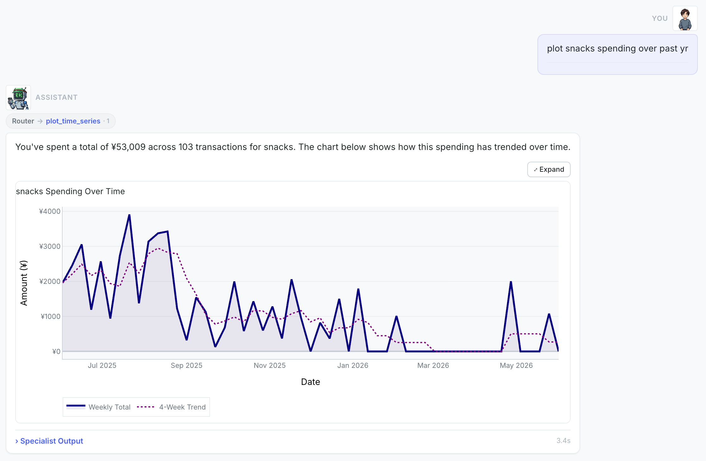
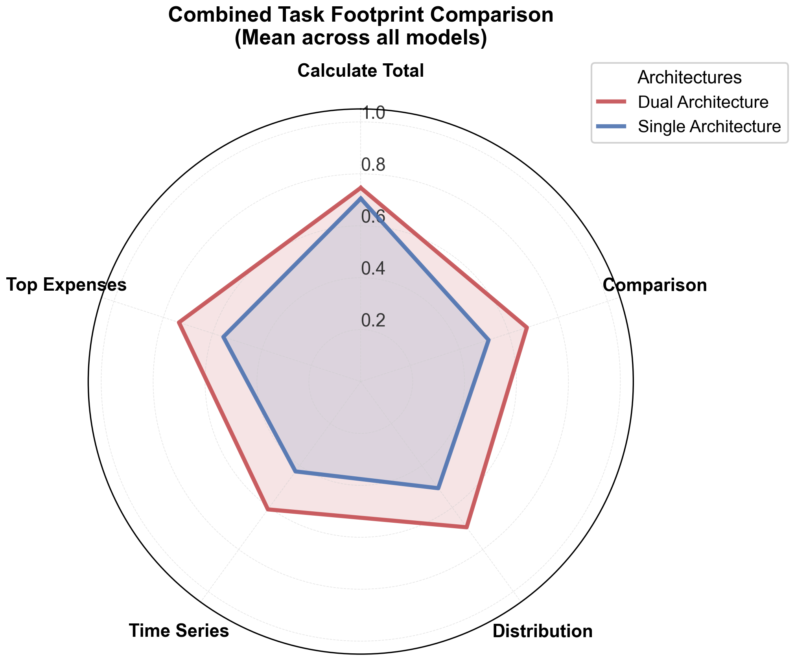

SpendSight: Privacy-Preserving Personal Finance Q&A with Sub-2B LLMs
SpendSight: Privacy-Preserving Personal Finance Q&A with Sub-2B LLMs
Question: Can sub-2B LLMs handle personal finance Q&A?
Finding: Mostly yes - One of the best setups reached 89.1% task accuracy in ~3s using 1.2 GB RAM.
I started experimenting with small language models running locally on consumer hardware (8GB M1 Mac) for private personal finance queries. Early experiments showed that sub-2B models struggled to generate accurate analytics code. Tool calling worked much better, but inserting every tool definition in the prompt hurt both speed and accuracy. So we split the task into tool selection and parameter generation.
We built a 115-query test suite and benchmarked six small LLMs on accuracy, speed, memory use, and failure modes across single-agent and dual-agent architectures, accepted at workshops at COLM and EMNLP.

FinNLP Workshop at EMNLP 2026 · HAIPS Workshop at COLM 2026
Code · Project Story